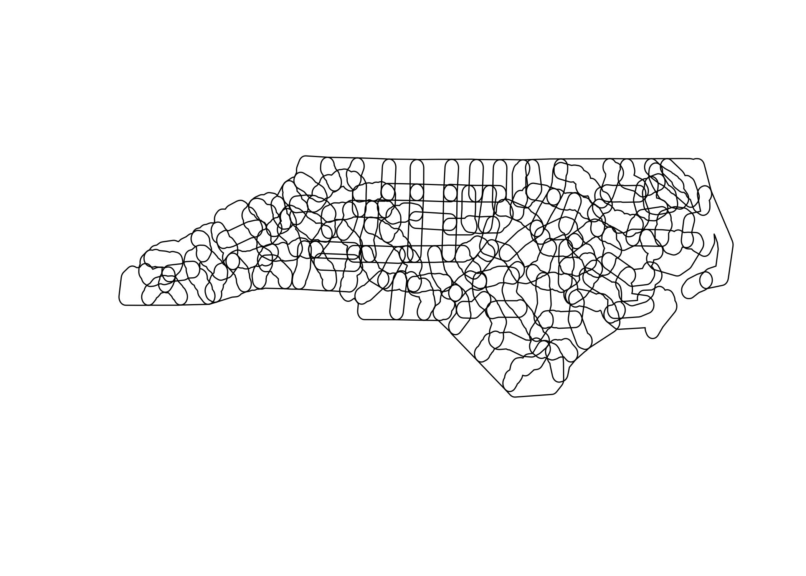

The goal of sedonadb is to provide an R interface to Apache SedonaDB. SedonaDB provides a DataFusion-powered single-node engine with a wide range of spatial capabilities built in, including spatial SQL with high function coverage and GeoParquet IO.
Installation
sedonadb can be installed from R-multiverse:
install.packages("sedonadb", repos = "https://community.r-multiverse.org")You can install the development version of sedonadb from GitHub with:
pak::pkg_install("apache/sedona-db/r/sedonadb")Installing a development version of sedonadb requires a Rust compiler and a GEOS system dependency (e.g., brew install geos or apt-get install libgeos-dev). Install instructions for these dependencies on other platforms can be found on the sf package homepage.
Example
You can use SedonaDB to read (Geo)Parquet files from anywhere. Filters are used to reduce the amount of data downloaded based on GeoParquet and/or Parquet metadata:
library(sedonadb)
#> Warning: package 'sedonadb' was built under R version 4.5.2
url <- "https://github.com/geoarrow/geoarrow-data/releases/download/v0.2.0/microsoft-buildings_point_geo.parquet"
sd_read_parquet(url) |> sd_to_view("buildings", overwrite = TRUE)
filter <- "POLYGON ((-73.4341 44.0087, -73.4341 43.7981, -73.2531 43.7981, -73.2531 43.8889, -73.1531 43.8889, -73.1531 44.0087, -73.4341 44.0087))"
sd_sql(glue::glue("
SELECT * FROM buildings
WHERE ST_Intersects(ST_GeomFromText('{filter}', 4326), geometry)
")) |> sd_preview()
#> ┌─────────────────────────────────┐
#> │ geometry │
#> │ geometry │
#> ╞═════════════════════════════════╡
#> │ POINT(-73.29533522 44.00847556) │
#> ├╌╌╌╌╌╌╌╌╌╌╌╌╌╌╌╌╌╌╌╌╌╌╌╌╌╌╌╌╌╌╌╌╌┤
#> │ POINT(-73.29092778 44.00421331) │
#> ├╌╌╌╌╌╌╌╌╌╌╌╌╌╌╌╌╌╌╌╌╌╌╌╌╌╌╌╌╌╌╌╌╌┤
#> │ POINT(-73.277808 43.998823) │
#> ├╌╌╌╌╌╌╌╌╌╌╌╌╌╌╌╌╌╌╌╌╌╌╌╌╌╌╌╌╌╌╌╌╌┤
#> │ POINT(-73.277524 44.004619) │
#> ├╌╌╌╌╌╌╌╌╌╌╌╌╌╌╌╌╌╌╌╌╌╌╌╌╌╌╌╌╌╌╌╌╌┤
#> │ POINT(-73.2774573 44.0044719) │
#> ├╌╌╌╌╌╌╌╌╌╌╌╌╌╌╌╌╌╌╌╌╌╌╌╌╌╌╌╌╌╌╌╌╌┤
#> │ POINT(-73.27775838 44.0046742) │
#> └─────────────────────────────────┘
#> Preview of up to 6 row(s)Conversion to and from sf are supported:
library(sf)
#> Linking to GEOS 3.12.1, GDAL 3.8.4, PROJ 9.4.0; sf_use_s2() is TRUE
nc <- sf::read_sf(system.file("shape/nc.shp", package = "sf"))
nc |> sd_to_view("nc", overwrite = TRUE)
sd_sql("SELECT * FROM nc")
#> ┌─────────┬───────────┬─────────┬───┬─────────┬─────────┬────────────────────────────────────────┐
#> │ AREA ┆ PERIMETER ┆ CNTY_ ┆ … ┆ SID79 ┆ NWBIR79 ┆ geometry │
#> │ float64 ┆ float64 ┆ float64 ┆ ┆ float64 ┆ float64 ┆ geometry │
#> ╞═════════╪═══════════╪═════════╪═══╪═════════╪═════════╪════════════════════════════════════════╡
#> │ 0.114 ┆ 1.442 ┆ 1825.0 ┆ … ┆ 0.0 ┆ 19.0 ┆ MULTIPOLYGON(((-81.4727554321289 36.2… │
#> ├╌╌╌╌╌╌╌╌╌┼╌╌╌╌╌╌╌╌╌╌╌┼╌╌╌╌╌╌╌╌╌┼╌╌╌┼╌╌╌╌╌╌╌╌╌┼╌╌╌╌╌╌╌╌╌┼╌╌╌╌╌╌╌╌╌╌╌╌╌╌╌╌╌╌╌╌╌╌╌╌╌╌╌╌╌╌╌╌╌╌╌╌╌╌╌╌┤
#> │ 0.061 ┆ 1.231 ┆ 1827.0 ┆ … ┆ 3.0 ┆ 12.0 ┆ MULTIPOLYGON(((-81.2398910522461 36.3… │
#> ├╌╌╌╌╌╌╌╌╌┼╌╌╌╌╌╌╌╌╌╌╌┼╌╌╌╌╌╌╌╌╌┼╌╌╌┼╌╌╌╌╌╌╌╌╌┼╌╌╌╌╌╌╌╌╌┼╌╌╌╌╌╌╌╌╌╌╌╌╌╌╌╌╌╌╌╌╌╌╌╌╌╌╌╌╌╌╌╌╌╌╌╌╌╌╌╌┤
#> │ 0.143 ┆ 1.63 ┆ 1828.0 ┆ … ┆ 6.0 ┆ 260.0 ┆ MULTIPOLYGON(((-80.45634460449219 36.… │
#> ├╌╌╌╌╌╌╌╌╌┼╌╌╌╌╌╌╌╌╌╌╌┼╌╌╌╌╌╌╌╌╌┼╌╌╌┼╌╌╌╌╌╌╌╌╌┼╌╌╌╌╌╌╌╌╌┼╌╌╌╌╌╌╌╌╌╌╌╌╌╌╌╌╌╌╌╌╌╌╌╌╌╌╌╌╌╌╌╌╌╌╌╌╌╌╌╌┤
#> │ 0.07 ┆ 2.968 ┆ 1831.0 ┆ … ┆ 2.0 ┆ 145.0 ┆ MULTIPOLYGON(((-76.00897216796875 36.… │
#> ├╌╌╌╌╌╌╌╌╌┼╌╌╌╌╌╌╌╌╌╌╌┼╌╌╌╌╌╌╌╌╌┼╌╌╌┼╌╌╌╌╌╌╌╌╌┼╌╌╌╌╌╌╌╌╌┼╌╌╌╌╌╌╌╌╌╌╌╌╌╌╌╌╌╌╌╌╌╌╌╌╌╌╌╌╌╌╌╌╌╌╌╌╌╌╌╌┤
#> │ 0.153 ┆ 2.206 ┆ 1832.0 ┆ … ┆ 3.0 ┆ 1197.0 ┆ MULTIPOLYGON(((-77.21766662597656 36.… │
#> ├╌╌╌╌╌╌╌╌╌┼╌╌╌╌╌╌╌╌╌╌╌┼╌╌╌╌╌╌╌╌╌┼╌╌╌┼╌╌╌╌╌╌╌╌╌┼╌╌╌╌╌╌╌╌╌┼╌╌╌╌╌╌╌╌╌╌╌╌╌╌╌╌╌╌╌╌╌╌╌╌╌╌╌╌╌╌╌╌╌╌╌╌╌╌╌╌┤
#> │ 0.097 ┆ 1.67 ┆ 1833.0 ┆ … ┆ 5.0 ┆ 1237.0 ┆ MULTIPOLYGON(((-76.74506378173828 36.… │
#> └─────────┴───────────┴─────────┴───┴─────────┴─────────┴────────────────────────────────────────┘
#> Preview of up to 6 row(s)